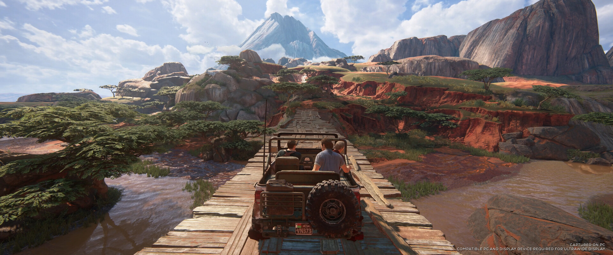
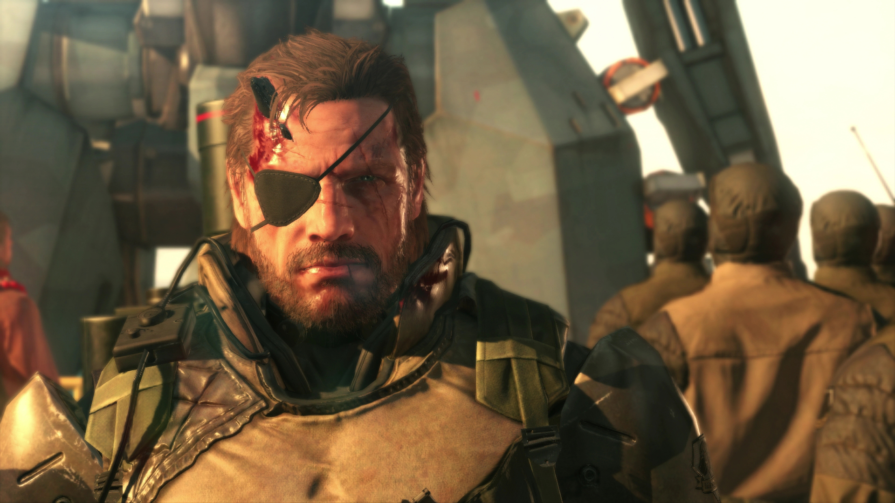
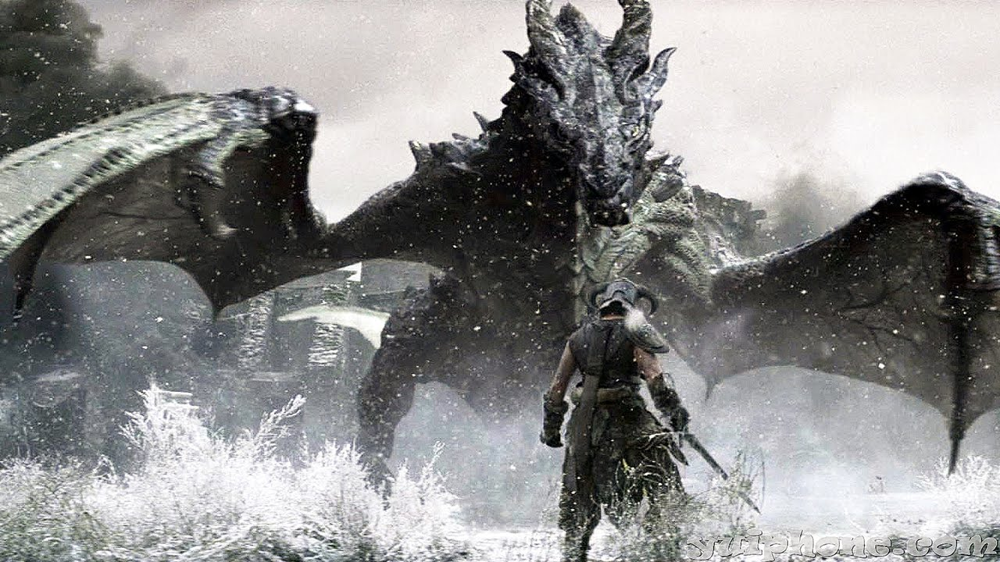

10- stardew valley

Os jogadores assumem o papel de um personagem que herda a fazenda dilapidada de seu falecido avô em um lugar conhecido como Stardew Valley. Stardew Valley é aberto, permitindo aos jogadores cultivar, criar gado, pescar, cozinhar, minerar, forragear e socializar com os habitantes da cidade, incluindo a capacidade de casar e ter filhos.
9- gta san andreas do sonic
gta san andreas, só que do sonic.
8- uncharted 4
]O jogador navega por diferentes ambientes, movendo-se por locais que incluem cidades, edifícios e campos abertos com o objetivo de progredir pela narrativa. O jogador pode usar armas de fogo, combate corpo a corpo e furtividade para combater inimigos. O personagem jogável durante a maior parte do jogo é Nathan Drake, um caçador de tesouros que é fisicamente capaz de pular, correr, escalar, nadar, esgueirar-se por paredes e saliências estreitas, balançar-se em cordas, usar um gancho de agarrar e realizar outras ações acrobáticas.[1]
7- god of war

A era da mitologia grega da série, mostra Kratos seguindo um caminho de vingança devido às maquinações dos deuses do Olimpo, enquanto a era da mitologia nórdica, que apresenta seu filho Atreus como um protagonista secundário, e mostra um Kratos diferente, cansado e mais velho em um caminho de redenção, o que inadvertidamente coloca os dois em conflito com os deuses nórdicos e em busca do impedimento do Ragnarök.
6- gta 5

Os jogadores controlam três protagonistas e podem alternar entre eles durante e fora das missões. A história é centrada em sequências de assaltos, com muitas missões envolvendo a jogabilidade de tiro e direção. Um sistema de "procurado" define a resposta e agressividade das forças da lei contra os crimes cometidos pelo jogador.
5- METAL GEAR SOLID 5- O MELHOR
A acção acontece em 1984, nove anos depois de Ground Zeroes, e segue o mercenário Punished "Venom" Snake,[N 1] à medida que este se aventura na África (no decorrer da Guerra Civil Angolana, na fronteira Angola-Zaire) e no Afeganistão durante a Guerra Soviética-Afegã, para procurar vingança sobre as pessoas que destruíram as suas forças e que quase o mataram durante os eventos ocorridos em Ground Zeroes.
4- skyrim
Skyrim é um jogo de RPG que mantém a tradicional jogabilidade de mundo aberto encontrada na série The Elder Scrolls.[6] O jogador é livre para andar pela terra de Skyrim a sua vontade. Em Skyrim há nove grandes "posses", com nove capitais que são as principais cidades do jogo.
3- red dead redemption 1

O jogo se passa em 1911 durante o declínio do Velho Oeste e segue a história de John Marston, um antigo fora-da-lei que tem sua esposa e filho tomados como reféns pelo governo para forçá-lo a trabalhar como seu caçador contratado. Sem escolhas, Marston parte em uma jornada para levar três membros de sua antiga gangue até a justiça
2- minecraft

Ele é um jogo de mundo aberto onde os jogadores podem construir, explorar e sobreviver em um ambiente feito de blocos cúbicos. O jogo permite grande liberdade de criação, com jogadores podendo construir qualquer coisa que imaginarem, desde casas simples a grandes estruturas complexas.
1- RED DEAD REDEMPTION 2

A história se passa em 1899 em uma representação ficcional do oeste, meio-oeste e sul dos Estados Unidos e acompanha o fora da lei Arthur Morgan, que precisa lidar com o declínio do Velho Oeste e sobreviver à perseguição de forças governamentais, gangues rivais e outros adversários.